Board
The board of Linea Recta consists entirely out of students. They are taking care of the practices, activities and of course a good atmosphere! If you have questions or remarks you are always welcome to contact the board. They are the persons to go to within the association for important matters, whether personal or in general.
Board 49 (2025 - 2026)
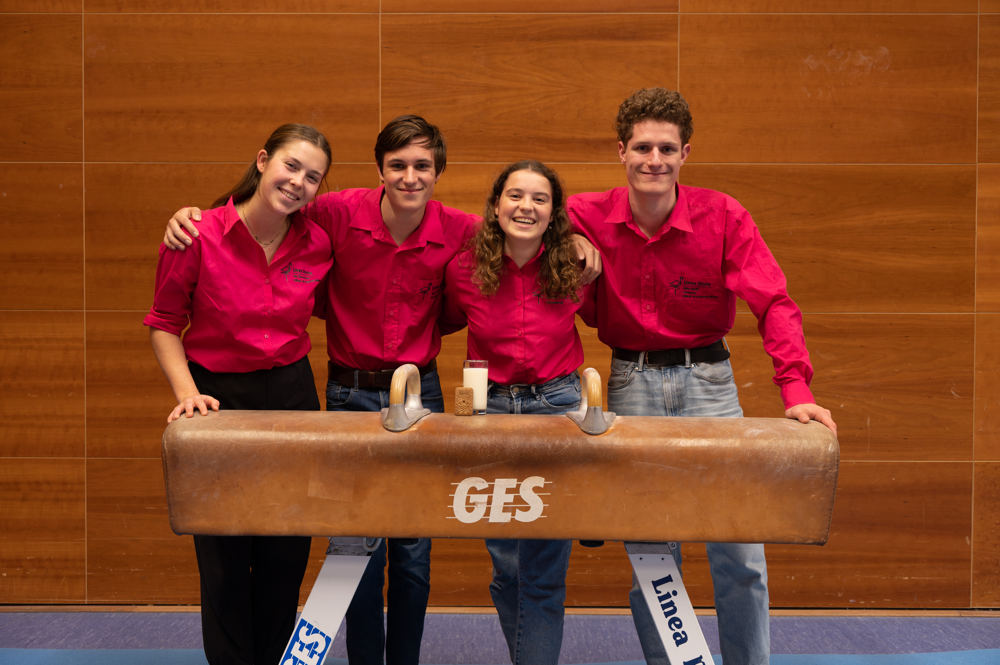
| Daniëlle van der Vlist |
Chairman |
@ |
| Rowan van het Hul |
Secretary |
@ |
| Sjors Wulff |
Treasurer & External Affairs |
@ |
| Květa Sky Gonzorová |
Internal affairs |
@ |
Board 48 (2024 - 2025)
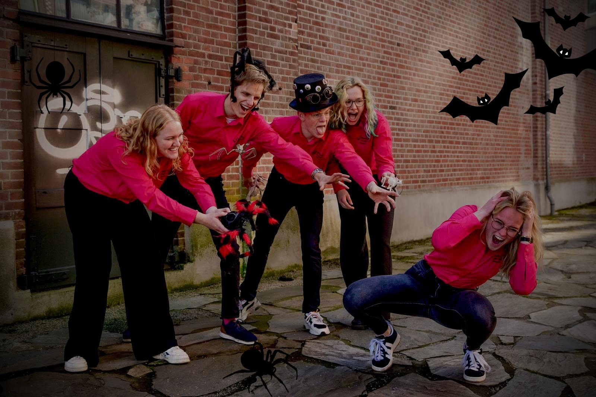
| Esther Mulder |
Chairman |
| Elfi Jenkins |
Secretary |
| Ben van Viegen |
Treasurer |
| Elske Feenstra |
Internal affairs |
| Jasper Wichers |
External affairs |
Board 47 (2023 - 2024)

| Thijs Naves |
Chairman |
| Jack 't Jong |
Secretary |
| Thomas van den Berg |
Treasurer |
| Fiona Wormeester |
Internal affairs |
| Svenya Tolkamp |
External affairs |
Board 46 (2022 - 2023)
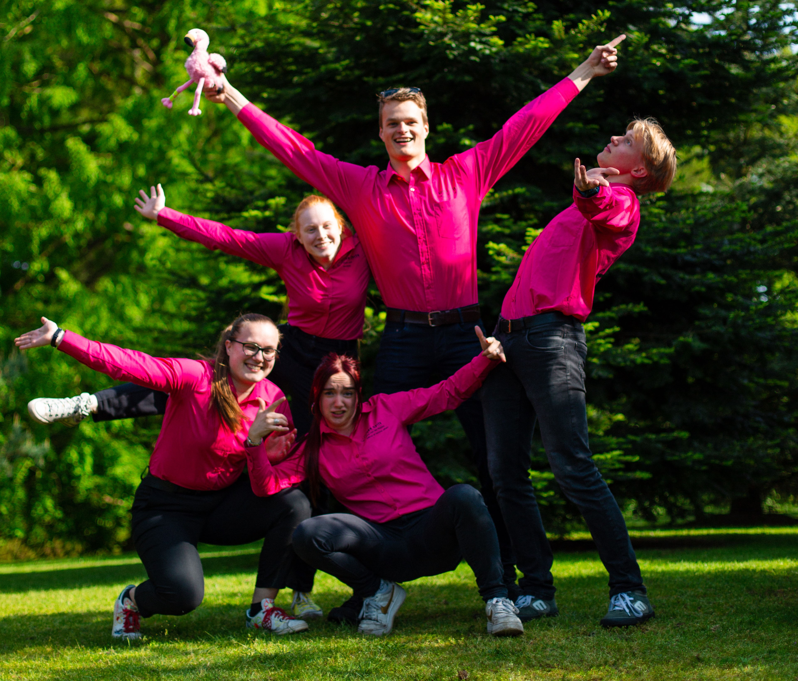
| Riemer Durk Krol |
Chairman |
| Mette Laros |
Secretary |
| Sara Loomans |
Treasurer |
| Gina van der Meijden |
Internal affairs |
| Samuel Kalkman |
External affairs |
Board 45 (2021 - 2022)

| Daphne Dijkhuis |
Chairwoman |
| Timon Veurink |
Secretary |
| Anne Leijzer |
Treasurer |
| Naud de Adelhart Toorop |
Internal affairs |
| Marlou Rave |
External affairs |
Board 44 (2020 - 2021)
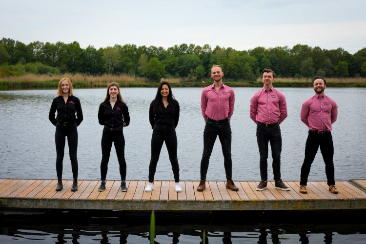
| Emma Soeten |
Chairwoman |
| Sophie Buurman |
Secretary |
| Eline Peeters |
Treasurer |
Gindon Bante and
Steffan Hakkers |
Internal affairs |
| Berwout Heemstra |
External affairs |
Board 43 (2019 - 2020)
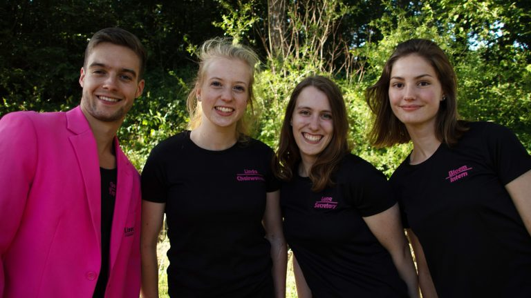
| Linda Schepens |
Chairwoman |
| Lune Robers |
Secretary |
| Gert Jan de Boer |
Treasurer |
| Bloem van Dam |
Internal affairs |
Board 42 (2018 - 2019)
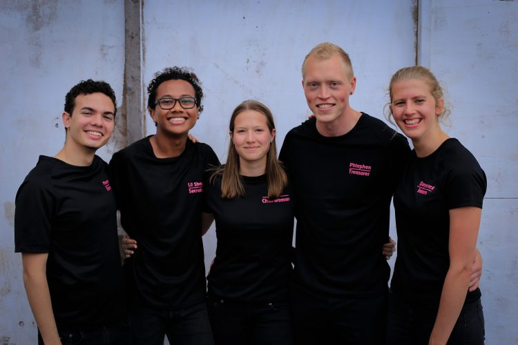
| Elke Timmermans |
Chairwoman |
| Shane Meije |
Secretary |
| Steven Horstink |
Treasurer |
| Marieke Kropman |
Internal affairs |
| Emanuel Velez Cano |
External affairs |
Board 41 (2017 - 2018)
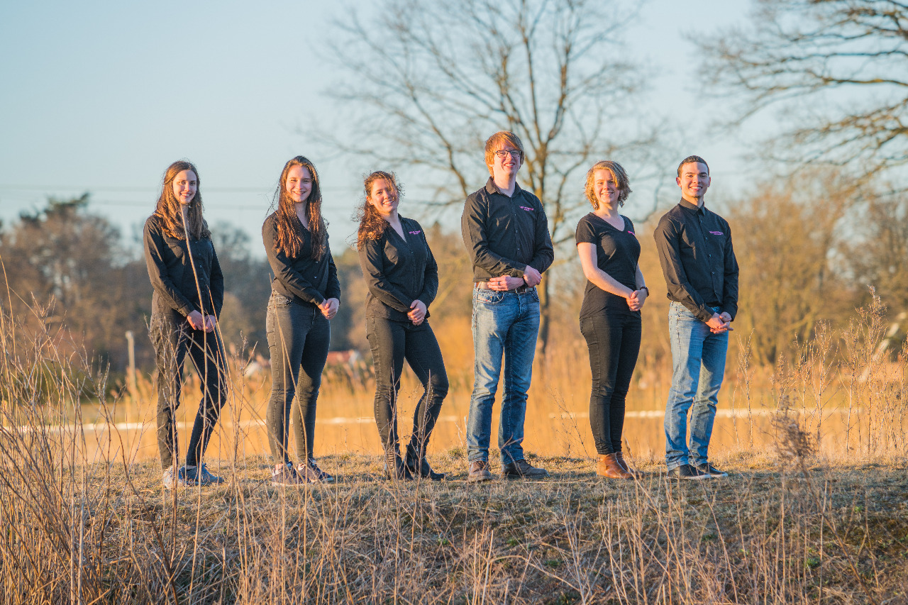
| Rolinda Westhuis |
Chairwoman |
| Sanne van Deelen |
Secretary |
| Luuk van Heumen |
Treasurer |
| Kim Böttcher |
Internal affairs |
| Eva de Wit |
External affairs |
Board 40 (2016 - 2017)
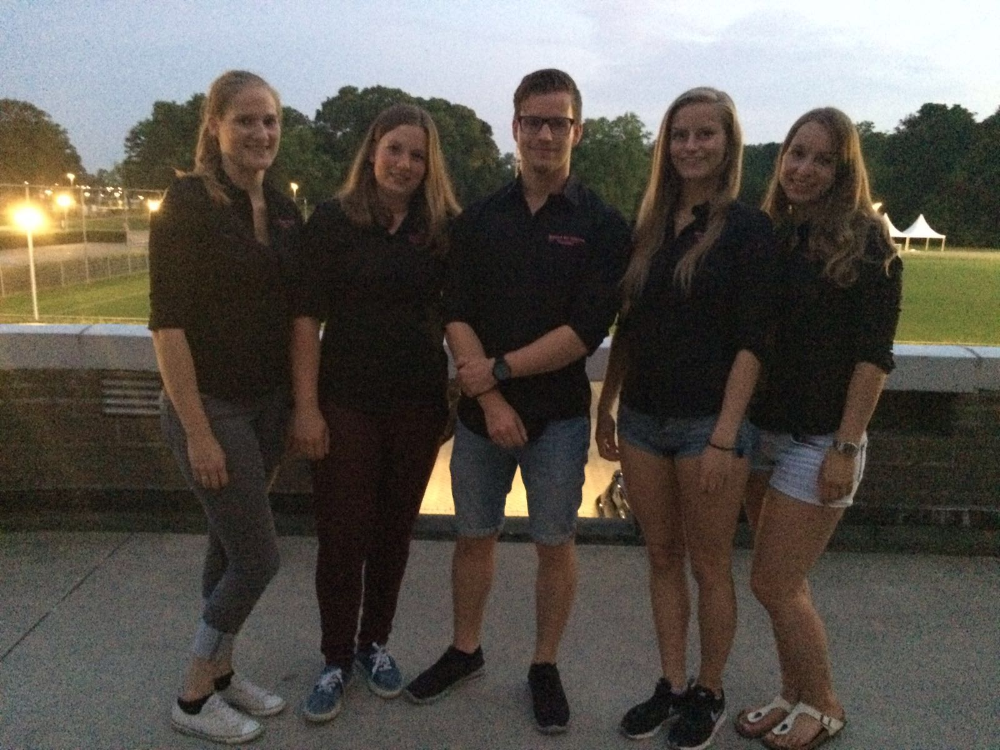
| Ramon ter Huurne |
Chairman |
| Vera Wonnink |
Secretary |
| Evelien Broeze |
Treasurer |
| Jeanna van Haren |
Internal affairs |
| Esther Slouwerhof |
External affairs |
Board 39 (2014 - 2015)
| Aukie Hooglugt |
Chairman |
| Lotte Weedage |
Secretary |
| Freija Geldof |
Treasurer |
| Carlijn Veldhorst |
Internal affairs |
| Tom Baumeister |
External affairs |
Board 38 (2013 - 2014)
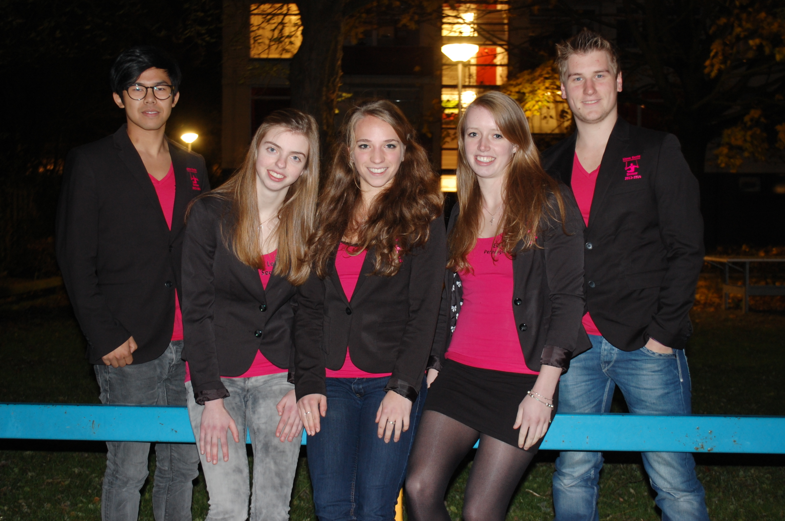
| Sanne van der Poel |
Chairman |
| Laura Veenendaal |
Secretary |
| Evelien Brands |
Treasurer |
| Xiaoming Op de Hoek |
Internal affairs |
| Alejandro Prinzen |
External affairs |
Board 37 (2012 - 2013)
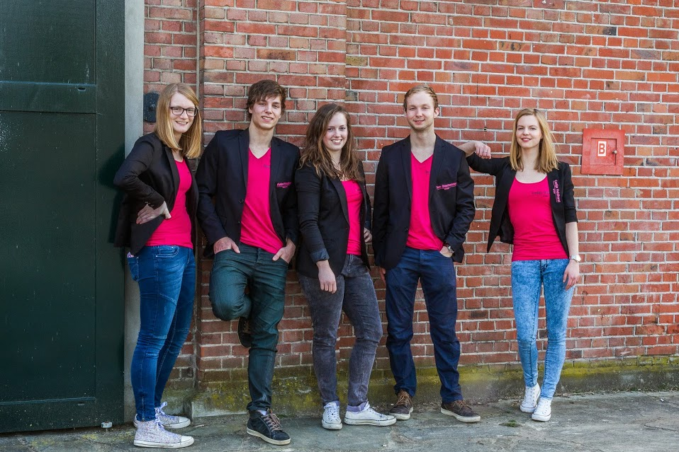
| Marlie Stegeman |
Chairman |
| Franziska Michels |
Secretary |
| Henrike Maris |
Treasurer |
| Tim Doornkamp |
Internal affairs and competition |
| Rutger Maltha |
External affairs and materials |
Board 36 (2011 - 2012)
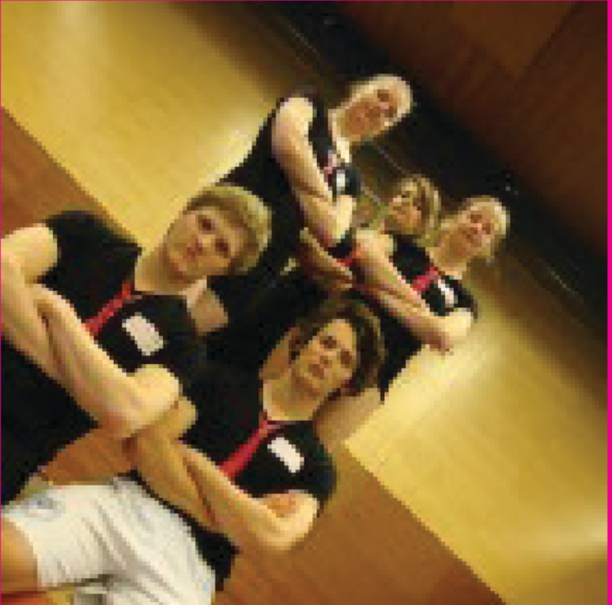
| Iris Drenth |
Chairman |
| Henrike Maris |
Secretary |
| Nienke Gietema |
Treasurer |
| Tim Mulder |
Internal affairs |
| Rutger Maltha |
Competition and materials |
Board 38 (2010 - 2011)
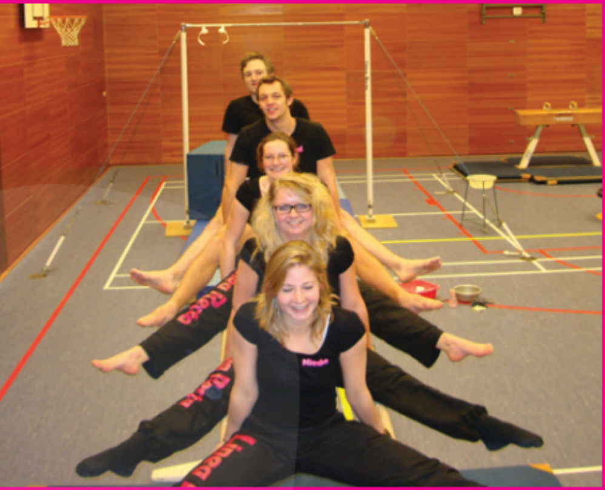
| Nienke Gietema |
Chairman |
| Wendy Haas |
Secretary |
| Jens Abbing |
Treasurer |
| Marjolein Martens |
Internal affairs |
| Roel Hollander |
External affairs, competition and materials |
Board 37 (2009 - 2010)
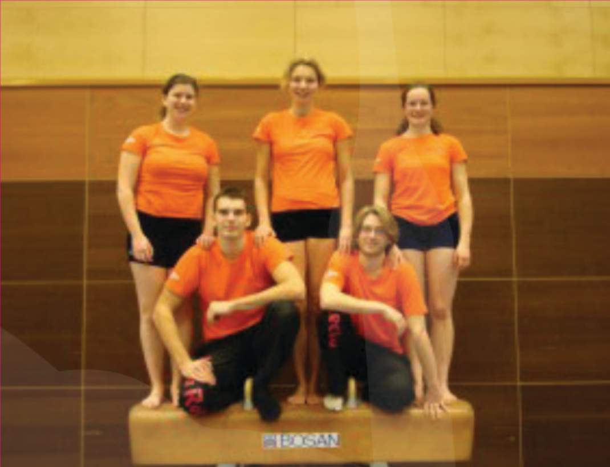
| Jan Lugtig |
Chairman and competition |
| Robin Groenen |
Secretary and materials |
| Marjolein Martens |
Treasurer |
| Marlies Verbruggen |
Internal affairs |
| Claudia Gemser |
Barcommisoner |
Board 36 (2008 - 2009)
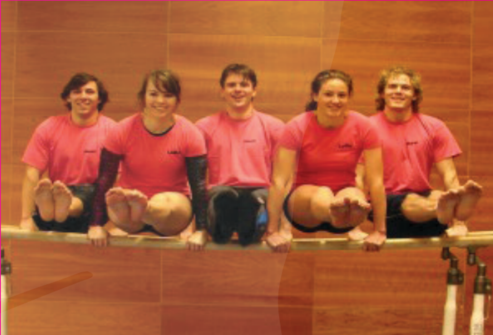
| Joran Sanders |
Chairman |
| Marcel Otto |
Secretary |
| Lidia Ferrari |
Treasurer |
| Lotte Homan |
Internal affairs |
| Joost van Putten |
competition and materials |
Board 35 (2007 - 2008)
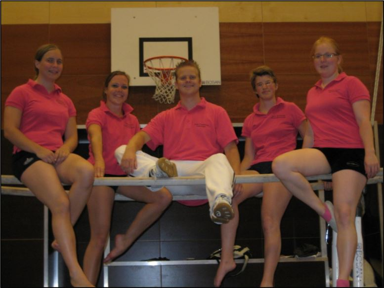
| Anne Franssens |
Chairman |
| Floortje Euser |
Secretary |
| José de Zeeuw |
Treasurer |
| Linda Nalis |
Internal affairs |
| Saskia Ton |
Competition and materials |
Board 34 (May - November 2007)
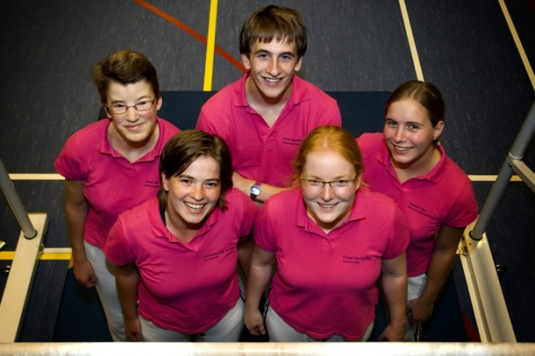
| Floortje Euser |
Chairman |
| Christina de Jonge |
Secretary |
| Joris Mosheuvel |
Treasurer |
| Saskia Ton |
Internal affairs |
| José de Zeeuw |
External affairs |
Board 33 (2006 - 2007)
| Cristina de Jonge |
Chairman |
| Floortje Euser |
Secretary |
| Barry Nijkamp |
Treasurer |
| Joris Mosheuvel |
Competition and materials |
Board 32 (2005 - 2006)
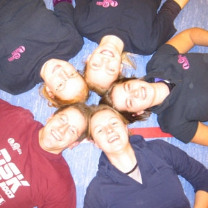
| Sabine van der Snoek |
Chairman |
| Ada Drost |
Secretary |
| Barry Nijkamp |
Treasurer |
| Floortje Euser |
Internal affairs |
| Christina de Jonge |
Competition and materials |